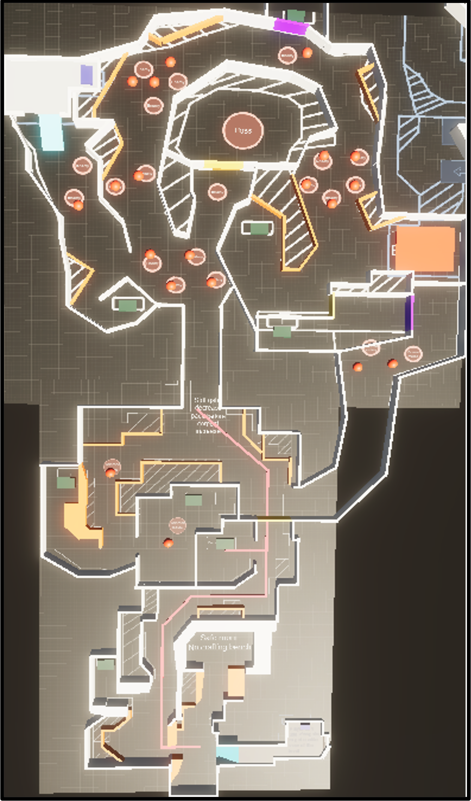
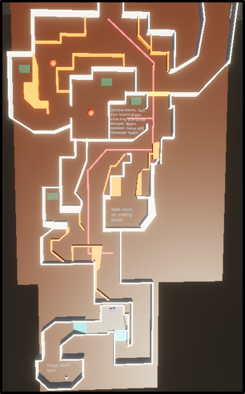

Redesign:
Walkthrough:

In this redesigned version I removed some of the branching paths such as the green section on the right and the entire left
section of the second area. I felt that by removing the branching paths it would prompt players to explore the ones that existed
more. By creating a tighter level with less paths it can be more easily understood by players allowing them to build a strong mental
map and enabling us to achieve the same feeling that the levels in Dark Souls gives its players. I learnt that less is sometimes more
in level design.
The redesigned version reuses much of the first area and an altered version of the second area. I took the areas that players seemed
to enjoy the most and chose to expand upon those, removing the areas players did not enjoy or interact with much from the game
entirely to create a tighter and more enjoyable experience with more engaging pacing
Redesign:
Walkthrough:

Near the end of the project I designed a short tutorial section the player must pass through before they can get to the main
environment. I left this until the end of the project so that I could fully understand what I wanted to teach the player and what
was most important. This was a simple corridor like sequence however I felt that was all we needed to teach the player the simple
mechanics. I worked with environment artists to create the button icon decals that we used in the world to teach the player what each
button did. Our goal from a player point of view was to have them figure out what to do, we believe that this added a layer of mystery
and independence, prompting the player to test what each button did instead of just being told. We believe that this made players take
a far more independent and experimental approach to the game ensuring they could solve some of the puzzles and aligning with our Dark
Souls inspiration.
Alongside this I flipped where the first spawn point/player respawn point is. In the previous iteration when the player died
they would need to walk backwards towards the camera. This felt unnatural, disorienting and slowed the player down. Instead I
flipped the spawn point and the room so that when the player respawned they could move forward, improving the games flow and
allowing them to feel as though they were progressing or getting back into the action faster.
Final Layout:
Walkthrough:
Disclaimer: The second half of the video has been sped up
The video and image above showcases the final release version of the Junkyard Level. During the environment art process slight changes were
made to the level design to ensure a smoother player experience and to create feelings of openness which we believe would then make the
player feel lonely and more intimidated, fitting with our souls game inspiration and achieving our overall experience goals.